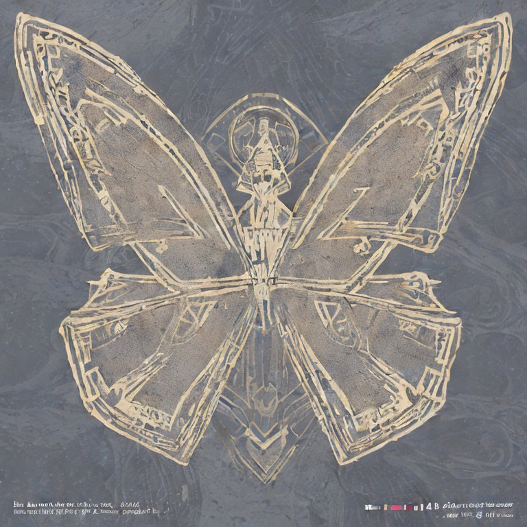
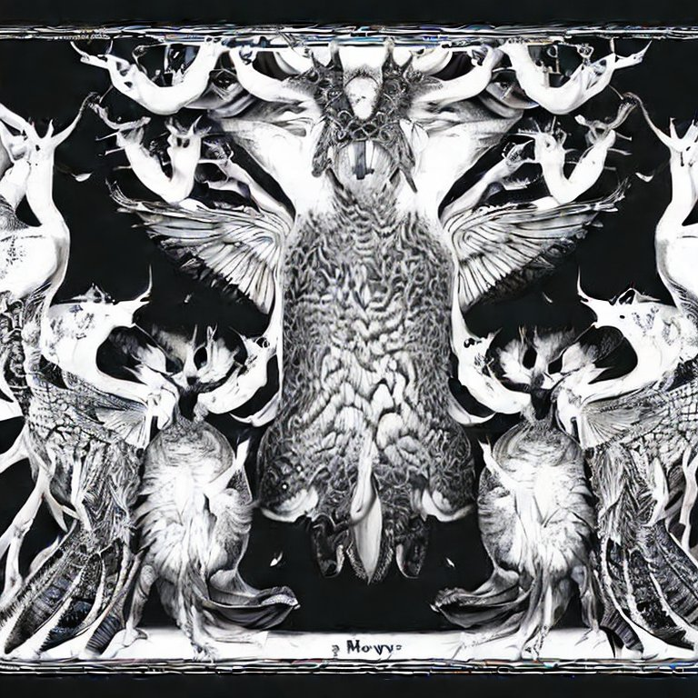
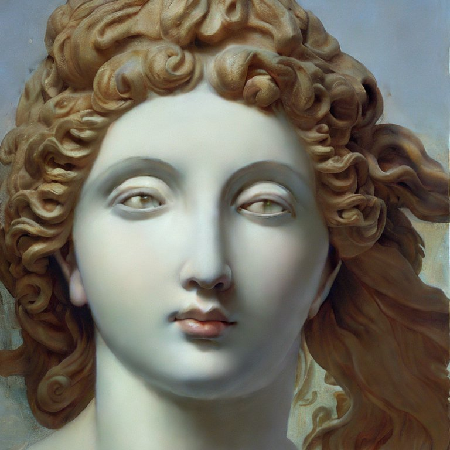

BUTTERFLY 11 (+PSYCHE)_w/pholo_ii
[Verse 1]
Butterfly eleven, trapped in a locket
Pacify the present even if it's toxic
Butterfly eleven, I'm so exhausted
Satisfy my heaven even if it's toxic

[Pre-Chorus 1]
Didn't ask for this metamorphosis
I'll spread my wings and I'll get away with it
Can't pause for this metamorphosis
I'm ignoring it
And I'm breaking promises
And I'm breaking promises
And I'm breaking promises

[Chorus]
Butterfly eleven, trapped in a locket
Butterfly eleven, I'm so еxhausted
Didn't ask for this metamorphosis
I'll spread my wings and I'll gеt away with this
(And I'll get away with it)
Butterfly eleven, trapped in a locket
(Falling into my abyss, [?] like this)
Butterfly eleven, I'm so exhausted
(Every time I hear you move I [?])
Didn't ask for this metamorphosis
(Every time I make you move I am in a [?])
I'll spread my wings and I'll get away with this
(And I'll get away with it)
[Verse 2]
Butterfly eleven, trapped in a locket
Pacify the present even if it's toxic
Butterfly eleven, I'm so exhausted
Satisfy my heaven even if it's toxic
[Pre-Chorus 2]
Didn't ask for this metamorphosis
I'll spread my wings and get away with it
Can't pause for this metamorphosis
I'm ignoring it
And I'm breaking promises
(And I'm breaking promises)

[Chorus]
Butterfly eleven, trapped in a locket
Butterfly eleven, I'm so exhausted
Didn't ask for this metamorphosis
I'll spread my wings and I'll get away with this
(And I'll get away with it)
Butterfly eleven, trapped in a locket
(Falling into my abyss, [?] like this)
Butterfly eleven, I'm so exhausted
(Every time I hear you move I [?])
Didn't ask for this metamorphosis
(Every time I make you move I am in a [?])
I'll spread my wings and I'll get away with this
(And I'll get away with it)
(Verse 3]
Wrapped up in my flutter
Hid amongst the clutter
wings in the gutter
I didn't want to see me suffer
If I want it, I'll go get it
I'm forgetting, I regret it
I go, go, go, ghost
This isn't what I hoped
Aphrodite
Why do you spite me?
I can't cope, cope, cope
Your hands around my throat
I am Psyche
So reunite me
I go bro-bro-broke
This isn't what I hoped
